Workstation opens up and i need to be able to run the basics
use gpt
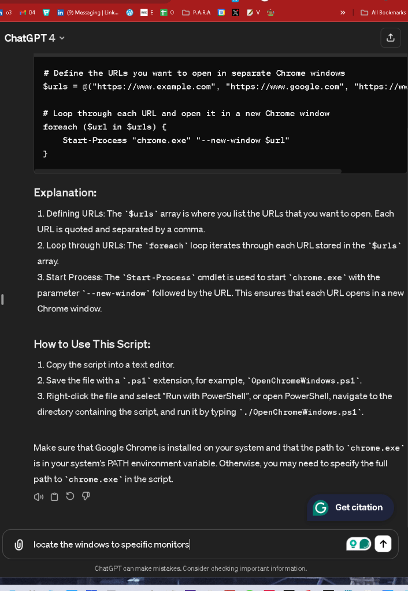
To open Google Chrome windows on specific monitors using PowerShell, we need to use a different approach because PowerShell itself doesn't directly support monitor targeting for application windows. One common method is to use additional scripting or third-party utilities to move windows after they have been opened.
Here, I will outline a PowerShell script that uses the Set-WindowPosition function from the PInvoke User32.dll library to position the Chrome windows after they are opened. This script assumes you have multiple monitors configured horizontally (side by side).
PowerShell Script with Monitor Targeting
Add-Type @"
using System;
using System.Runtime.InteropServices;
public class User32 {
[DllImport("user32.dll", SetLastError = true)]
public static extern bool MoveWindow(IntPtr hWnd, int X, int Y, int nWidth, int nHeight, bool bRepaint);
[DllImport("user32.dll", SetLastError = true)]
public static extern IntPtr FindWindow(string lpClassName, string lpWindowName);
}
"@
Define the URLs and monitor positions (0 for primary, 1 for secondary, etc.)
$urls = @(
@{ URL = "https://www.example.com"; Monitor = 0 },
@{ URL = "https://www.google.com"; Monitor = 1 },
@{ URL = "https://www.openai.com"; Monitor = 0 }
)
Assume 1920x1080 resolution for simplicity; adjust as necessary for your monitors
$width = 1920
$height = 1080
Open each URL in a new Chrome window and move it to the specified monitor
foreach ($item in $urls) {
$process = Start-Process "chrome.exe" "--new-window $($item.URL)" -PassThru
Start-Sleep -Seconds 2 # Wait for Chrome to load
$window = [User32]::FindWindow(null, "New Tab - Google Chrome")
if ($window -ne [IntPtr]::Zero) {
$xPosition = $item.Monitor * $width
[User32]::MoveWindow($window, $xPosition, 0, $width, $height, $true)
}
}
How This Script Works
-
PInvoke Setup: This script begins by adding type definitions with PInvoke to use the
MoveWindowandFindWindowfunctions from the User32.dll. This allows controlling window positioning programmatically. -
URL and Monitor Definitions: URLs are stored in a hashtable with a key for the URL and a monitor index (0 for the primary monitor, 1 for the second, etc.).
-
Window Moving: For each URL, Chrome is started, and the script waits briefly to ensure the window has loaded. The
FindWindowfunction looks for the window titled "New Tab - Google Chrome". Once found, the script uses theMoveWindowfunction to place the window on the designated monitor based on the index multiplied by the width of a monitor (assuming all monitors have the same resolution).
Adjustments You Might Need
-
Resolution: Adjust the
$widthand$heightvariables to match the resolution of your monitors. -
Delay: The
Start-Sleepmay need adjustment depending on how quickly Chrome launches on your system. -
Window Title: The window title used in
FindWindowmust match exactly; it might change based on the active tab or page title.
This script assumes a relatively simple setup with monitors having the same resolution. If your configuration differs, adjustments to the script will be necessary.
Sexy
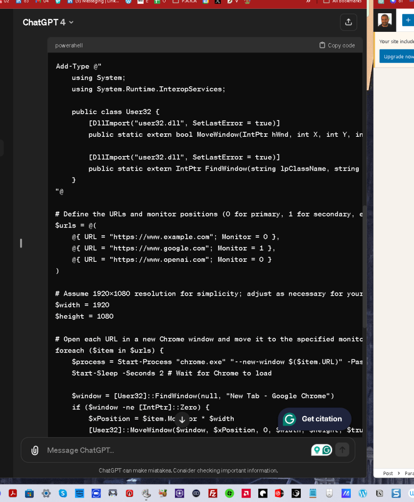
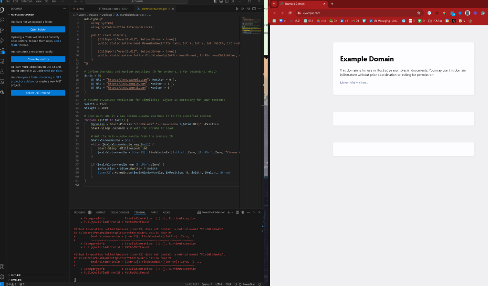
error
Method invocation failed because [User32] does not contain a method named 'FindWindowEx'.
At C:\Users\Pexabo\Desktop\startthebrowsers.ps1:34 char:9
-
$mainWindowHandle = [User32]::FindWindowEx([IntPtr]::Zero, [I …
-
~~~~~~~~~~~~~
CategoryInfo : InvalidOperation: (:) [], RuntimeException
- FullyQualifiedErrorId : MethodNotFound
Method invocation failed because [User32] does not contain a method named 'FindWindowEx'.
At C:\Users\Pexabo\Desktop\startthebrowsers.ps1:34 char:9
-
$mainWindowHandle = [User32]::FindWindowEx([IntPtr]::Zero, [I …
-
~~~~~~~~~~~~~
CategoryInfo : InvalidOperation: (:) [], RuntimeException
- FullyQualifiedErrorId : MethodNotFound
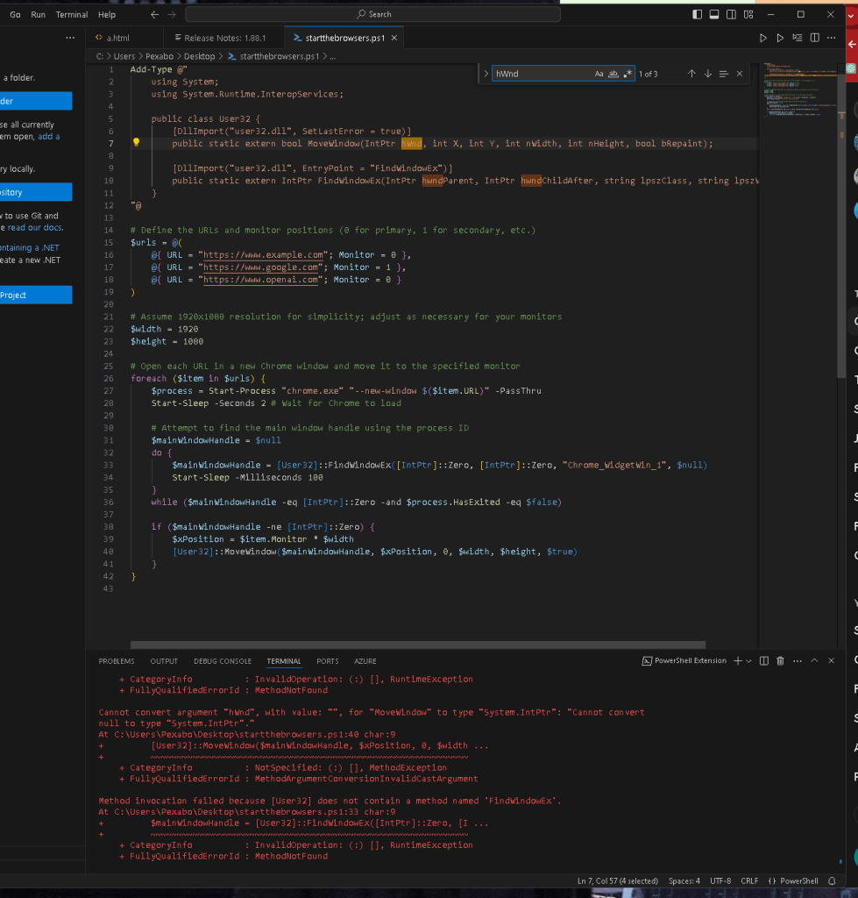
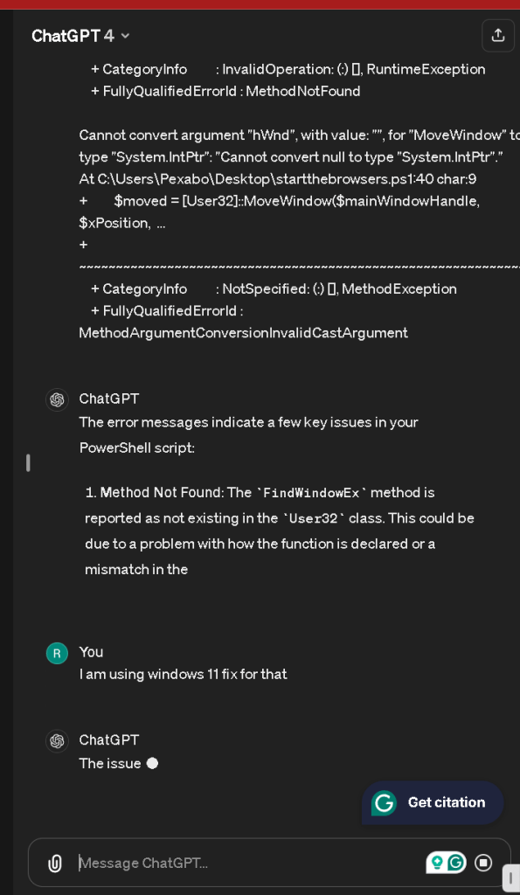
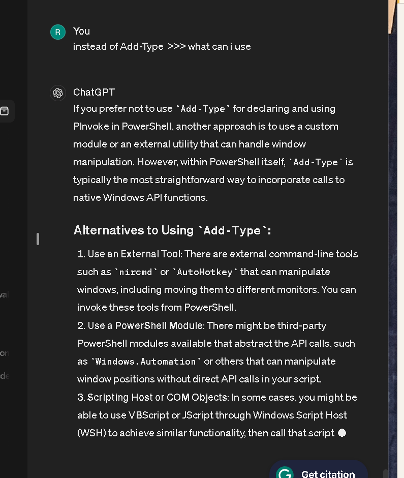
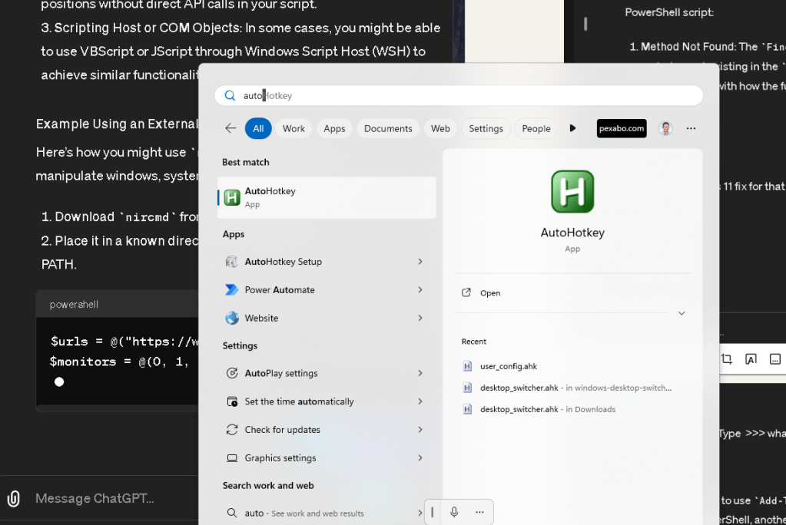
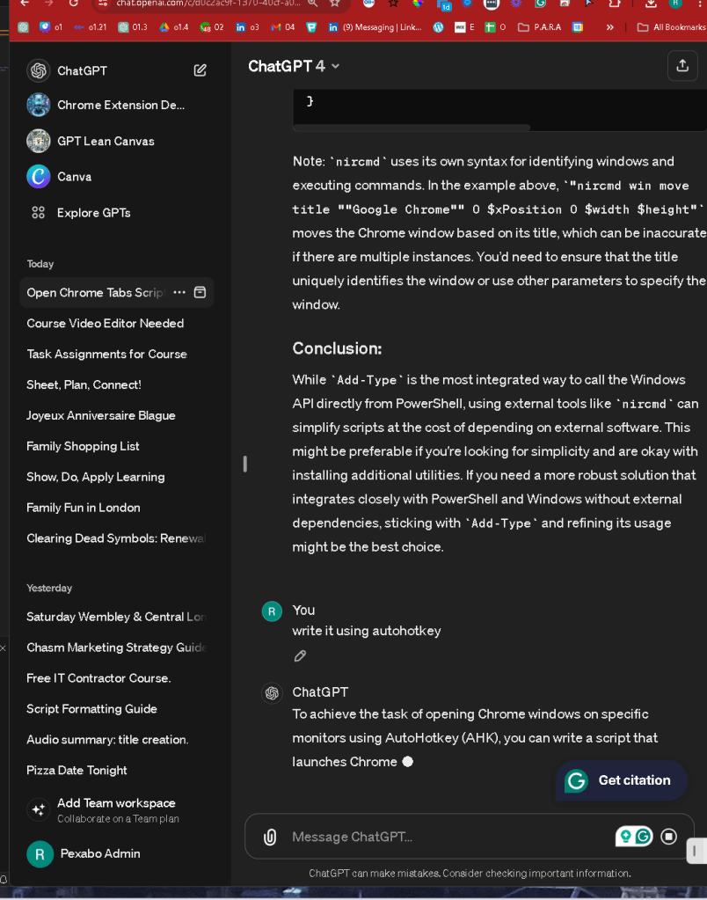
much cleaner
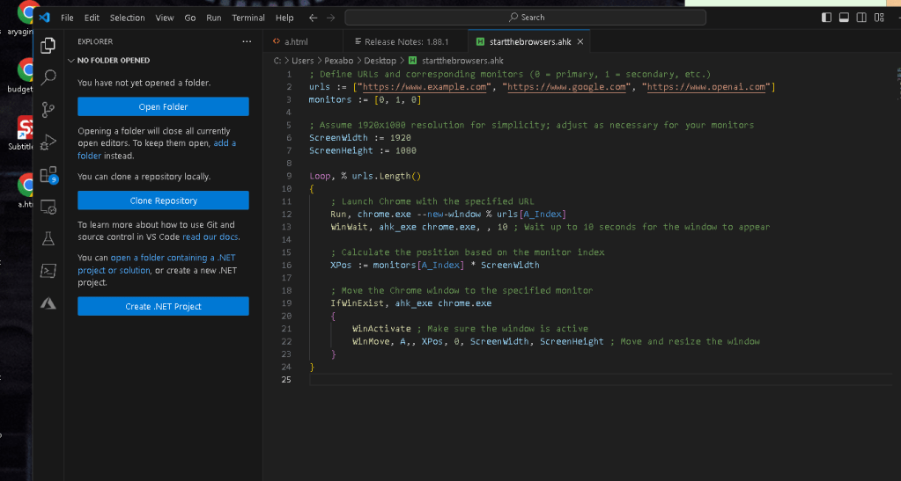
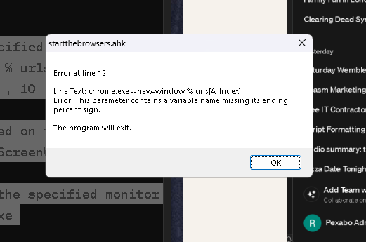
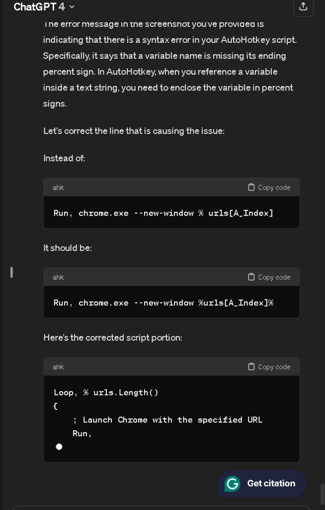
it works
Certainly! Below is the revised AutoHotkey script that should correctly open each URL in a new Google Chrome window on the designated monitor:
; Define URLs and corresponding monitors (0 = primary, 1 = secondary, etc.)
urls := ["https://www.example.com", "https://www.google.com", "https://www.openai.com"]
monitors := [0, 1, 0]
; Assume 1920x1080 resolution for simplicity; adjust as necessary for your monitors
ScreenWidth := 1920
ScreenHeight := 1080
Loop, % urls.Length()
{
; Launch Chrome with the specified URL
Run, % "chrome.exe --new-window " urls[A_Index]
WinWait, ahk_exe chrome.exe, , 10 ; Wait up to 10 seconds for the window to appear
; Calculate the position based on the monitor index
XPos := monitors[A_Index] * ScreenWidth
; Move the Chrome window to the specified monitor
IfWinExist, ahk_exe chrome.exe
{
WinActivate ; Make sure the window is active
WinMove, A,, XPos, 0, ScreenWidth, ScreenHeight ; Move and resize the window
}
Sleep 1000 ; Wait a moment before opening the next window to prevent overlaps
}
To use this script:
-
Copy the above script into a text editor.
-
Save the file with a
.ahkextension (for example,OpenChromeWindows.ahk). -
Double-click the
.ahkfile to run the script if you have AutoHotkey installed.
This script includes an additional Sleep command at the end of the loop to ensure that windows do not overlap if they are created too quickly in succession. Adjust the ScreenWidth and ScreenHeight to match the resolution of your monitors. If your monitor setup has different resolutions or a different arrangement, you may need to adjust the calculations for XPos.
give 4 monitors and give the screen resolutions
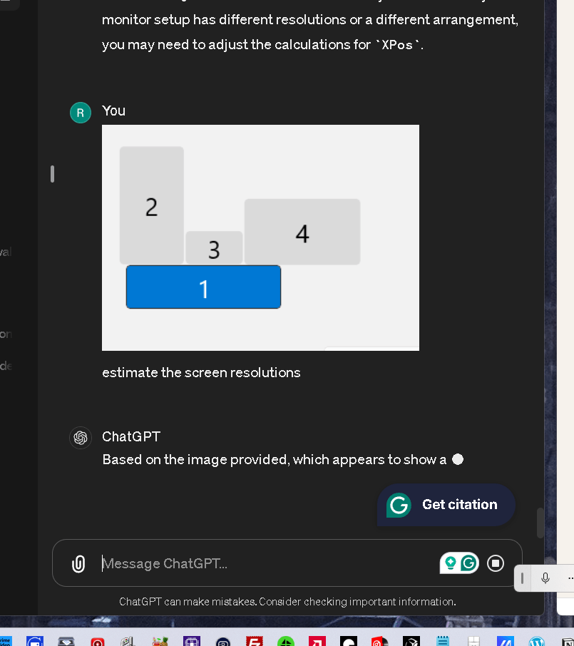
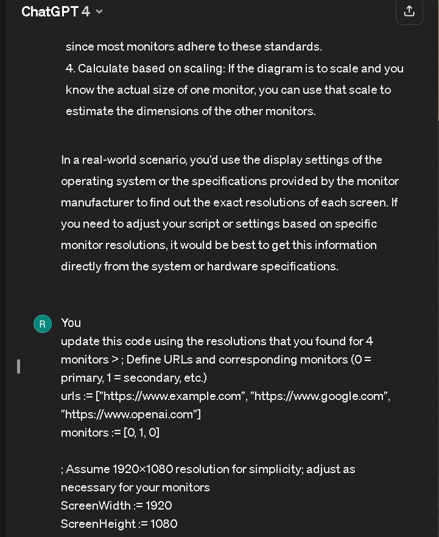
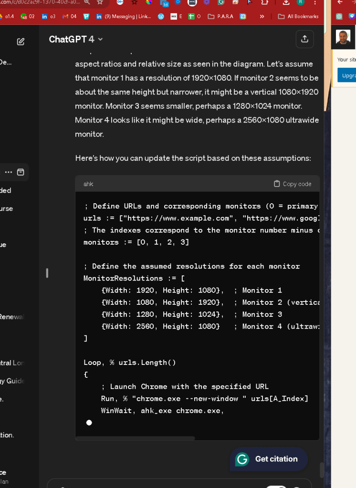
fix syntax together
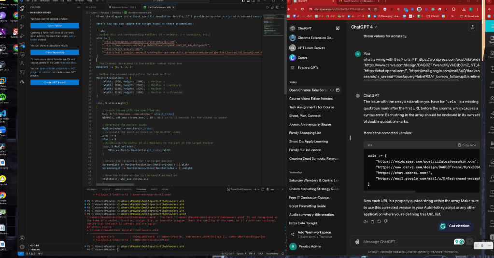
you can also paste these
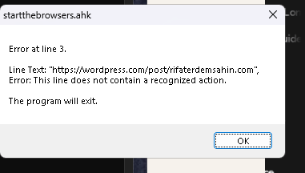
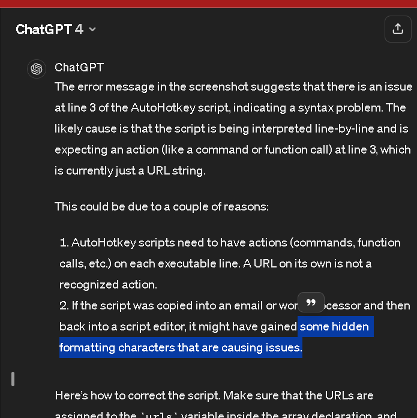
`; Define URLs and corresponding monitors (0 = primary, 1 = secondary, etc.)
urls := [
"https://wordpress.com/post/rifaterdemsahin.com",
"https://www.canva.com/design/DAGCZFYwanc/KyVkBJbOmZ_NT_4dqyFb3g/edit",
"https://chat.openai.com/",
"https://mail.google.com/mail/u/0/#advanced-search/is_unread=true&query=label%3A1_borrow_followup&isrefinement=true"
]
; The indexes correspond to the monitor number (starting with 0)
monitors := [0, 1, 2, 3]
; Define the assumed resolutions for each monitor
MonitorResolutions := [
{Width: 1920, Height: 1080}, ; Monitor 1
{Width: 1080, Height: 1920}, ; Monitor 2 (vertical)
{Width: 1280, Height: 1024}, ; Monitor 3
{Width: 2560, Height: 1080} ; Monitor 4 (ultrawide)
]
Loop, % urls.Length()
{
; Launch Chrome with the specified URL
Run, % "chrome.exe --new-window " urls[A_Index]
WinWait, ahk_exe chrome.exe, , 10 ; Wait up to 10 seconds for the window to appear
; Determine the monitor index
MonitorIndex := monitors[A_Index]
; Calculate the position based on the monitor index
XPos := 0
YPos := 0
; Accumulate the widths of all monitors to the left of the target monitor
Loop, % MonitorIndex
{
monitorLoopIndex := A_Index - 1
XPos += MonitorResolutions[monitorLoopIndex + 1].Width
}
; Obtain the resolution for the target monitor
ScreenWidth := MonitorResolutions[MonitorIndex + 1].Width
ScreenHeight := MonitorResolutions[MonitorIndex + 1].Height
; Move the Chrome window to the specified monitor
IfWinExist, ahk_exe chrome.exe
{
WinActivate ; Make sure the window is active
WinMove, A,, XPos, YPos, ScreenWidth, ScreenHeight ; Move and resize the window
}
Sleep 1000 ; Wait a moment before opening the next window to prevent overlaps
}
ask dont use a list`
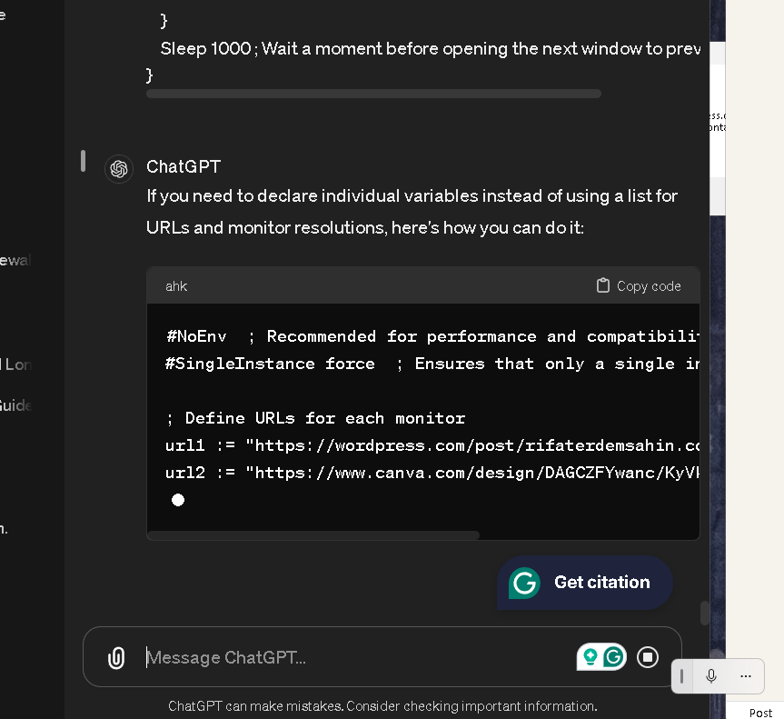
iterated version
`#NoEnv ; Recommended for performance and compatibility with future AutoHotkey releases.
SingleInstance force ; Ensures that only a single instance of the script runs.
; Define URLs for each monitor
url1 := "https://wordpress.com/post/rifaterdemsahin.com"
url2 := "https://www.canva.com/design/DAGCZFYwanc/KyVkBJbOmZ_NT_4dqyFb3g/edit"
url3 := "https://chat.openai.com/"
url4 := "https://mail.google.com/mail/u/0/#advanced-search/is_unread=true&query=label%3A1_borrow_followup&isrefinement=true"
; Define monitor indices (0 = primary, 1 = secondary, etc.)
monitor1 := 0
monitor2 := 1
monitor3 := 2
monitor4 := 3
; Define resolutions for each monitor
width1 := 1920
height1 := 1080
width2 := 1080
height2 := 1920
width3 := 1280
height3 := 1024
width4 := 2560
height4 := 1080
; Launch URLs on specified monitors
RunURL(url1, monitor1, width1, height1)
RunURL(url2, monitor2, width2, height2)
RunURL(url3, monitor3, width3, height3)
RunURL(url4, monitor4, width4, height4)
RunURL(url, monitor, width, height) {
; Launch Chrome with the specified URL
Run, % "chrome.exe --new-window " url
WinWait, ahk_exe chrome.exe, , 10 ; Wait up to 10 seconds for the window to appear
; Calculate X position based on monitor index
XPos := monitor * width
; Move the Chrome window to the specified monitor
IfWinExist, ahk_exe chrome.exe
{
WinActivate ; Make sure the window is active
WinMove, A,, XPos, 0, width, height ; Move and resize the window
}
Sleep 1000 ; Wait a moment before opening the next window to prevent overlaps
}
`
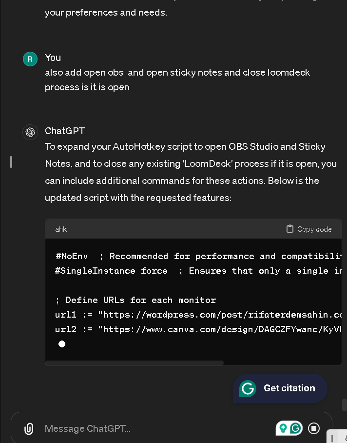
basic errorts
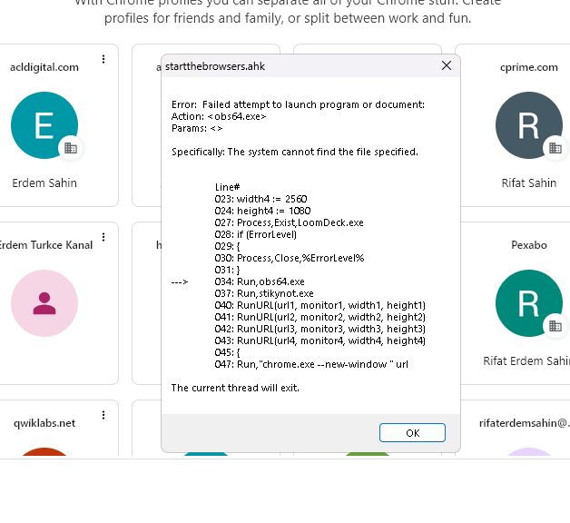
system variables makes sense
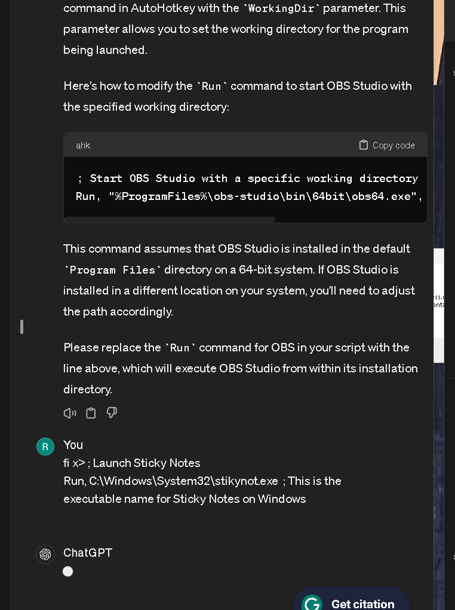
nice
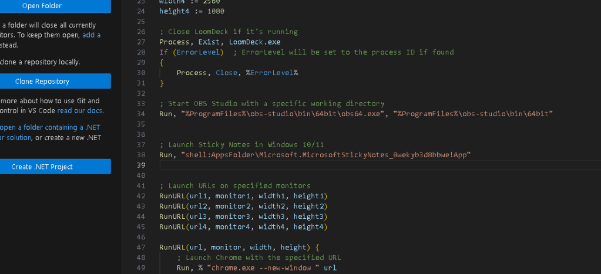
ask combo questions
Imported from rifaterdemsahin.com · 2024